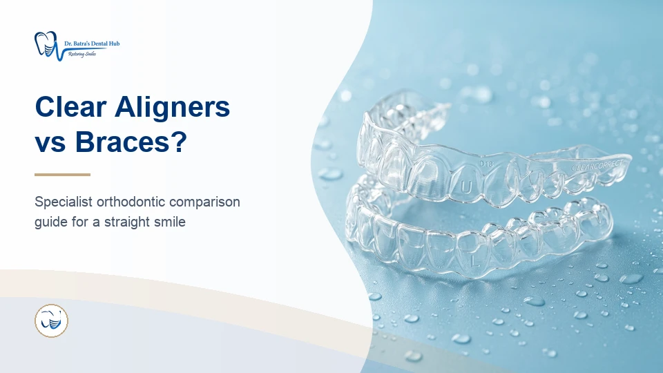
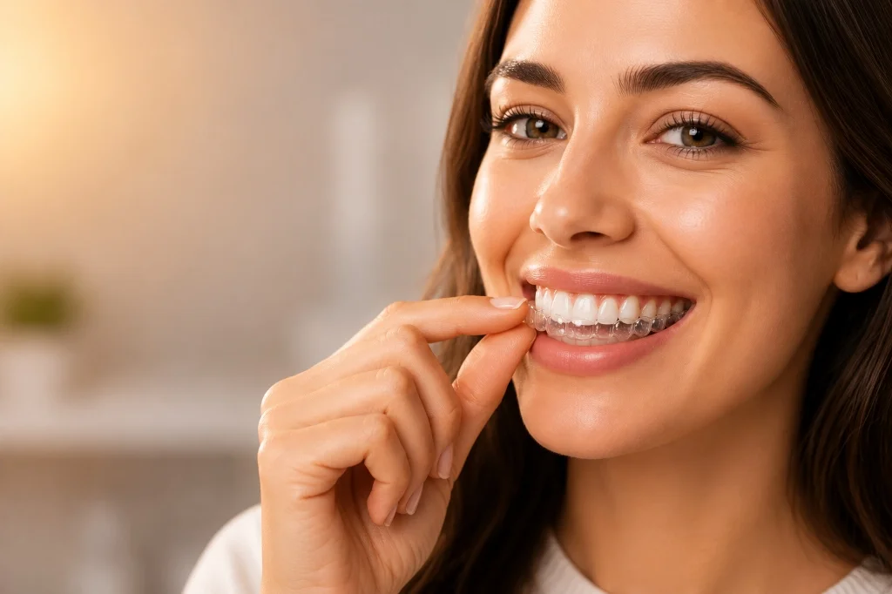

Clear Aligners in Ahmedabad: Straighten Your Teeth Without Traditional Braces

Are you looking for a modern and discreet way to straighten your teeth in Ahmedabad? Clear aligners offer an effective alternative to traditional braces, allowing you to achieve a beautifully aligned smile without visible metal brackets or wires.
At our clinic, we provide advanced clear aligner treatment in Ahmedabad using premium aligner systems, including Invisalign®, to help you achieve your dream smile comfortably and conveniently.
What Are Clear Aligners?
Clear aligners are custom-made, transparent, removable trays that gradually move your teeth into their desired positions. Each set of aligners is precisely designed using 3D digital planning technology, ensuring accurate and predictable results.
Unlike traditional braces, clear aligners are:
- Nearly invisible when worn
- Removable for eating, drinking, and brushing
- Comfortable with no metal wires or brackets
- Convenient with fewer dental visits required
Benefits of Clear Aligners
- Discreet Treatment: Nearly invisible aligners allow you to straighten your teeth without anyone noticing.
- Comfortable Fit: Smooth, custom-made trays eliminate the discomfort of metal brackets and wires.
- Removable Design: Easily remove your aligners for meals, special occasions, and oral hygiene routines.
- Predictable Results: Advanced 3D treatment planning provides a clear preview of your expected results before treatment begins.
- Better Oral Hygiene: Removable aligners make brushing and flossing easy, reducing the risk of cavities and gum problems.
Who Can Benefit from Clear Aligners?
Clear aligners are suitable for teens and adults who want to correct:
- Mild to moderate crowding
- Gaps between teeth
- Minor bite issues (overbite, underbite, crossbite)
- Relapse after previous orthodontic treatment
During your consultation, our orthodontic team will assess your dental condition and recommend the most suitable treatment option for you.
Why Choose Our Clinic for Clear Aligners in Ahmedabad?
Our clinic provides customized clear aligner treatment plans designed to deliver effective results with maximum comfort and convenience. We use advanced digital scanning and 3D treatment planning technology to ensure precision at every stage.
Whether you are looking for Invisalign® or other premium clear aligner systems, our experienced orthodontic team is committed to helping you achieve a confident, healthy smile.
Start Your Clear Aligner Journey Today
If you are considering clear aligners in Ahmedabad, schedule a consultation with our orthodontist. We will evaluate your teeth, discuss your treatment options, and create a personalized plan to help you achieve a straighter smile—discreetly and comfortably.

Where Aligners Work Well — and Where They Don't
Aligner marketing tends to imply they treat anything. Being straight about the limits is more useful. Aligners are excellent for mild to moderate crowding, spacing, and relapse after previous orthodontics. They are less predictable for large vertical movements, severe rotations of round-rooted teeth, closing large extraction spaces bodily, and significant skeletal discrepancies.
Where a case falls outside what aligners do reliably, fixed braces give better control and we will say so. Our full comparison is here: braces vs clear aligners.
The Compliance Question
Aligners must be worn 20 to 22 hours a day, coming out only to eat, drink anything other than water, and clean your teeth. At 20 hours treatment tracks as planned. At 14 hours, teeth stop following the sequence, trays stop fitting, and treatment has to be re-scanned or switched to fixed appliances. This is the single most common reason aligner treatment goes wrong, and it is worth being honest with yourself about before starting.

How We Plan Your Treatment
- Clinical assessment. Examination and radiographs to confirm your case is suitable for aligner treatment.
- 3D digital scan. An intraoral scan replaces putty impressions and produces the digital model your trays are built from.
- Treatment simulation. The planned tooth movement is mapped out so you can see the projected result before committing.
- Attachments and trays. Small tooth-coloured attachments are bonded where needed to give trays grip for rotations.
- Progress reviews. Every six to ten weeks, usually shorter visits than braces adjustments.
- Retention. Retainers fitted at the end — non-negotiable if the result is to hold.
Caring for Your Aligners
- Brush before putting trays back in — trapping sugar under a tray for hours reliably causes cavities
- Rinse trays in cool water; hot water distorts them
- Change to a new tray at night so you sleep through the initial tightness
- Keep the previous tray as a backup — losing one sets treatment back
- A slight lisp for the first few days is normal and resolves as your tongue adapts
Retainers
Teeth drift throughout life, whichever appliance moved them. Retention is usually a bonded wire behind the front teeth, a removable night-time retainer, or both. Stopping retainer wear is the main cause of relapse, and relapse cases are the most disappointing ones we see.
What Affects the Cost
Aligner cost depends on the number of trays your case requires, which is a function of how far the teeth need to move, and on the aligner system used. Simple cases need far fewer trays than complex ones. You will receive a written plan with costs after your scan, before anything is ordered.
Your Orthodontist
Aligner treatment at our clinic is led by Dr Japneet Kaur Batra, BDS, MDS in Orthodontics & Dentofacial Orthopedics and a certified Invisalign provider. She is a Senior Lecturer with a particular interest in guiding early facial development in children and in the management of cleft lip and palate patients.
It is worth insisting on treatment planned by an MDS-qualified orthodontist rather than a general practice offering aligners as an add-on. The appliance matters far less than the diagnosis behind it.
Clear Aligners in South Bopal & Ahmedabad
Aligner treatment needs fewer visits than braces, which suits patients travelling from across Ahmedabad. Our clinic is on the ground floor at B-17/C, Sun South Street, behind Safal Parisar-1, South Bopal — minutes from Bopal, Shela, Ghuma, Shilaj and Ambli, and reachable via the SP Ring Road.
Open Monday to Saturday 10:30 AM–8:00 PM and Sunday 10:00 AM–12:00 PM. Book a scan and simulation to find out whether aligners can treat your case.